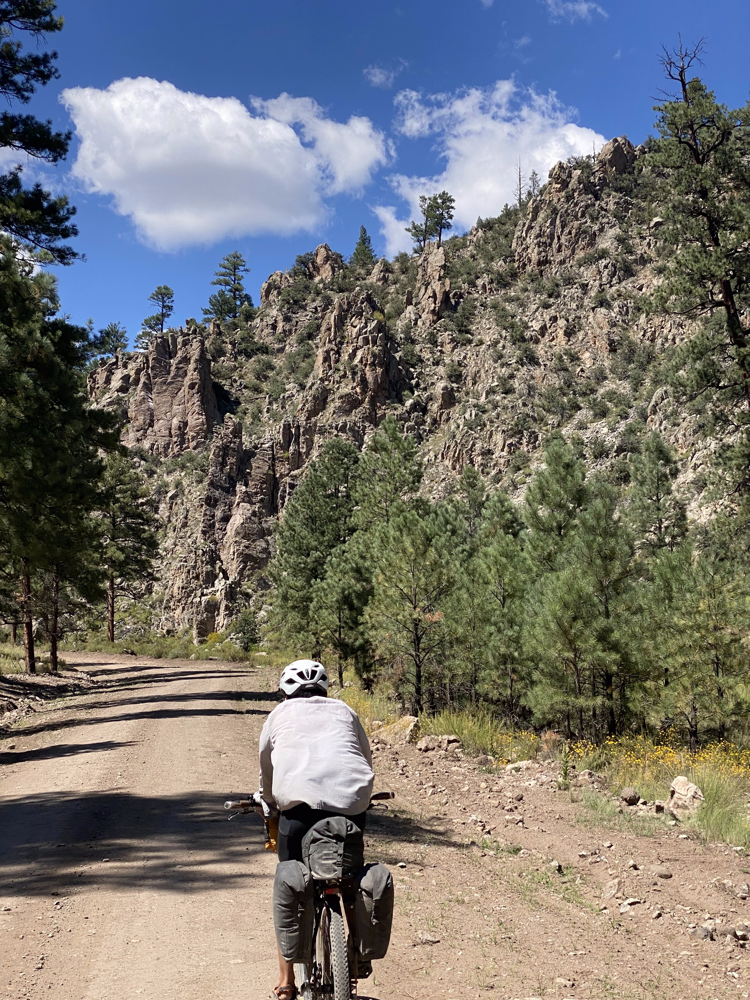
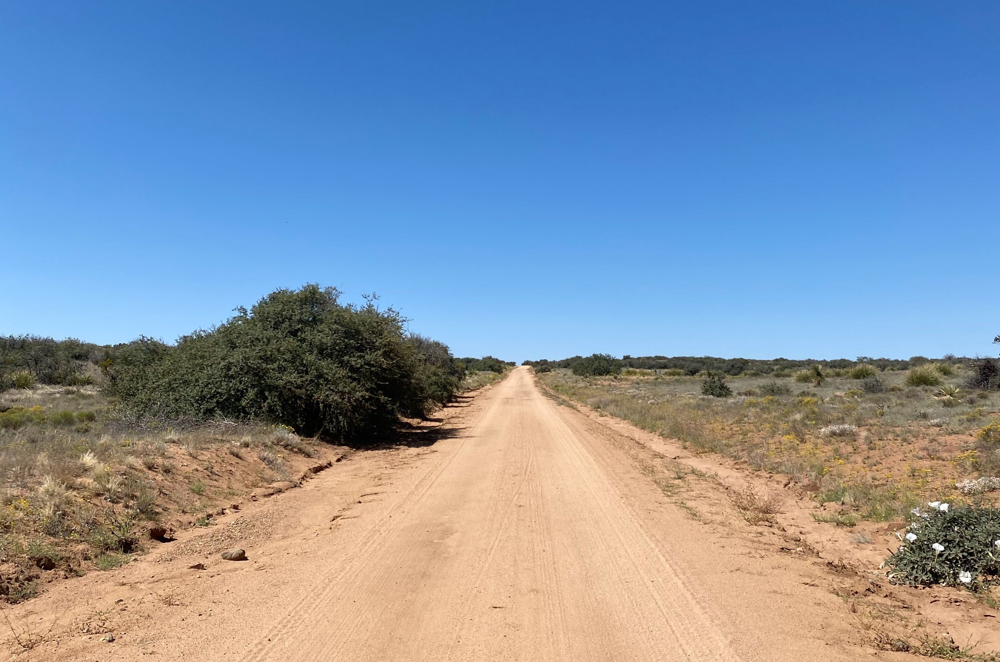

Section 7
The final and fastest section of the divide! Paired with the efforts from last week, the first few days of this section would push my weekly distance to almost 900 km. It will be a long time until I bike that much in a week again. The final section goes through Pie Town, the Gila wilderness, Silver City, then the border.
Day 52
I wanted some extra time in the air conditioned hotel so I stayed in town and relaxed while the others hit the road at 8:00 am. We would meet back up in Pie Town. I grabbed some breakfast, washed my bike, then finally got going. I rode along the old route 66 for a while before turning south. I caught up to a cyclist from Germany, Tim. He was also trying to make it to Pie Town, so after stopping for a rest, I told him I'd meet him there. The road went along a cliff and gave some interesting sights to enjoy, including a natural arch.
The pavement eventually gave way to some gravel road. I got a text from Joe telling me about the hours at the restaurant at Pie Town, I had to pick up the pace if I wanted to make it in time. After a while on the gravel road, I passed Tim again, and he asked me to get him a pie if I made it. The quality of the road diminished quickly as I got closer to Pie Town, which paired with the time limit on getting to town, got frustrating really quickly. The final boss of the day was a washboarded gravel road climb leading into a steep pavement climb through the town to make it to the restaurant. I made it with 15 minutes to spare and joined the group inside. I came in still panting from the climb, and the server got me a lemonade and quiche within minutes! After that, I ordered two pieces of pie for Tim and myself, then joined the group at the Toaster House. The Toaster House is a house in town that the owner keeps open for bikers doing the GDMBR and thru hikers doing the CDT. It didn't show up on maps, but it was unmistakable, with countless toasters mounted on the fence. The house was such a treat. This was one of the spots that was only possible because of the selfless upkeep of the people who were there before. The owner put so much trust in the people who stay at the house, and the trust is well placed. There were so many places like this along the trail, and it was so reassuring to see. Places that weren't run like businesses, even though they could have been. Places that exist only because someone wants to be hospitable for travelers.
After each of us claimed a bed in the house, we sat out on the porch for snacks and to chat. Tim showed up after a while and I brought out his pie. We spent the evening in the house, looking through some of the notes that previous travelers have left. Once everyone went to bed, I took the guitar and tried to play through a couple of songs that I have been itching to learn throughout the trip. I started dozing off on the porch outside, so I called it a night and went to sleep.
Day 53
Once again, I took my time with packing up. I wanted to make sure that everything in the house was just as we found it. Jesse stayed behind too. Since he was here before, the Toaster House was sentimental to him. Jesse and I rode out together to try to catch up with the others. He is a fast biker. The first 50 km of the day flew by as we biked at his pace. The landscape was less desert-y than the days before, with plenty of trees to give shade and lots of spots to fill up on water.
After making it down the first hill, we caught up to the group, and they picked up Brian and Kelly!!! I haven't seen them since the Great Basin so I was so excited to catch up. We got a group photo, then went on our way again. They weren't planning on going as far as us today, so we separated pretty quickly. We rode across a massive valley before entering the hills again. During the second climb of the day, a truck passed us, and we found Joe and Henry sitting in the back. After some banter, the rest of us continued up the hill.
I took a longer rest at the top of the climb, and would meet up with the rest of the group at camp. The day dragged on, and even after making it to the top of the second climb, a headwind slowed me right down. The scenery was beautiful though. I was surprised to see that even this far south, the foothills here were still very similar to those in Southern Alberta. The only difference was that there were sunflowers growing on the sides of the road. Eventually, I met up with the group at a ranch. They couldn't seat us for food since they were already at capacity, but they gave us some burritos and burgers for free! We went to a nearby campground to set up for the night. A vending machine next to the ranger station tempted all of us, but it was out of commission. I set up my hammock to relax in, but as dusk drew near, I didn't feel like going through the effort of setting up my tent. I set my sleeping bag out in the hammock and slept there for the night.
Day 54

By the time the cold was uncomfortable, the sun started coming up. Perfect timing! The night in the hammock felt pretty good and I was glad I gave it a try. I was starting to run low on food at this point, so Jesse offered some energy bars before he hit the road. I started after everyone left so I had the first hour or so to myself. I caught up to Joe and Henry at a snack cache for bikers. Someone set up a cooler close to the road full of drinks and energy bars for a "pay what you want" fee. We rode together for the rest of the day, going up and down the valleys of the Gila wilderness. The climbs today were steep and short.

I came across a potato looking rock and got really excited about the extra food, but was quickly disappointed when I picked it up. I had nothing left for dinner and I didn't know where the next store would be. Part of me wanted to bike all the way to Silver City, but Joe had an extra freeze dried meal that he offered. With that figured out, I was a lot more relaxed about the pace for the rest of the day. We caught up to Tim near the top of one of the climbs, and he had a flat that was pretty persistent. We pulled a thorn from inside the tire and put a patched tube back in, and it held air! Tim kept going, trying to make it to Silver City, and the rest of us stopped near Lake Roberts to camp. We couldn't find Jesse or Brandon, and there was no service to reach out to them. Our site overlooked the lake, and we had a nice sunset to look at during dinner.
Day 55
The morning was chilly, but we were all eager to get some food in Silver City, 50 km away. We got going just after 7. As we passed Lake Roberts, the road went slightly downhill, and we were all freezing from the air passing by. After reaching the climb, I started sprinting up just to get warm. All I had on my mind was breakfast, so I left Joe and Henry behind and continued up the hill on my own. After an hour of climbing, I was at the top of the main climb of the day. I was fully warmed up by this point, and the morning air lost its chill.

Past Pinos Altos, the road was downhill all the way to Silver City. The narrow valleys of the Gila wilderness opened up into dry plains. The route took me right next to a McDonalds, and I spotted Brandon and Jesse's bikes outside. I joined them inside for breakfast and lunch at the same sitting. Joe and Henry caught up an hour later and they got some food as well. There was a $50 motel in town so we decided we could all afford beds, splitting a room between two instead of five. The day was early so we killed some time in town. I bought Joe a dried meal to repay for the one I took yesterday. Tomorrow was going to be the last evening on the trip, so we planned a dinner and got the ingredients for a pesto pasta. With tomorrow's dinner taken care of, we ordered in some pizza, then watched Sicario before getting some rest.
Day 56
It felt surreal buying a flight home, as we made rough plans to finish the trip tomorrow and find a way to Tucson after. I gave myself a few days of buffer, not knowing exactly what day we would have our bikes packed up and ready to go by. With flights figured out, I left Silver City about an hour after the others. I took the highway for 30 km before turning onto a gravel road that ran through some dry and hilly ranchlands. I missed a turn going through here, but with the amount of roads winding through this area, an alternate route hardly added any distance. While going down a hill, the spare tire sitting on my pannier rack shifted, and got sucked into my rear wheel. I was going fast when that happened, so I almost lost control and steered into the ditch, but I managed to come to a stop and secure the spare a little better.

After 80 km, I caught back up to the group sitting outside of a convenience store at Separ. We discussed the logistics for how we were going to get to Tuscon from the border. One plan was to have one of us ride to a different town to get a U-Haul. There were shuttle services that ran to the border, but they were a lot more expensive than what we were willing to pay. Henry was paying for a shuttle but he was flying out of El Paso, so he would be going in the opposite direction from us. His shuttle driver suggested waiting at the border however, since there are shuttles that bring people from Mexico straight to Tuscon. If those shuttles had room, then there was a good chance that they would take us for a lot cheaper than a chartered shuttle. So we chanced it and decided to all stick together all the way to the border crossing in the middle of nowhere at Antelope Wells.
Brandon and Jesse waited up for me until I was ready to go the remaining 40 km. We rode along a frontage road next to the I 10, then turned down one of the longest straight roads of the entire trip down to the town of Hachita. A few kilometers from town, we spotted Joe and Henry in the distance, so without saying anything, we all dug in and tried to catch up. With half a kilometer to go, Jesse caught up and him and Joe sprinted into town. Brandon was close behind but I got dropped way before catching up. In town, we went into the convenience store and picked up some drinks and final ingredients for dinner. We all payed $10 to sleep in the community center for the night, and set up there.

The community center had a few cots, tables, and benches on the walls to sleep on. There was also a full kitchen, which made our group dinner much easier. We all got to cooking, and the smell of the food worked up our appetites. Over dinner, we finalized plans for the next day and reminisced over the memories from the past 8 weeks. I made a few phone calls while we had good service before going to sleep. A few crickets lived inside the community center, so even after we turned the lights off, we couldn't pretend that they weren't in the room with us.
Day 57
Here it was, the last day! We all started off early to make the most of the cool morning. Today probably had the flattest terrain of the entire trip, with a change of 150 meters over the course of 77 km. We rode together the entire time, and continued talking about the memorable moments we had across the trip. We also talked about our plans for after.
Once the border was in sight, we picked up the pace a little. It was a little anticlimactic but we were all so happy to have made it to the end. We all got our mandatory pictures with the Antelope Wells sign, and waited for the shuttle to show up. Henry's ride showed up, brought us some beers, then pointed out one of the vans that we could talk to about going to Tuscon. Brandon talked to them, and he let us know that they could drive us and our bikes to Tuscon. It all worked out so well! We loaded up our bikes, and took the remaining four seats at the back of the bus. We saw the last 100 km of our bike ride through the window of the van in an hour of driving. After that, we took the I10 all the way to Tuscon. Joe booked a hotel with his points and offered a spot for the rest of us.

Home
The plan from here was to get bike boxes for each of us, then make it to the Phoenix airport, about an hour away. We had a couple of days to accomplish that, so we never felt rushed. Joe got himself a car, and offered to drive the rest of us to Phoenix since he was staying in Tucson for a while longer. Brandon took us to a Waffle House, and played "There are Raisins in my Toast" on the jukebox as we walked out and headed towards the bike shop. Ajo bikes offered us free boxes, and only suggested we pay whatever we want to pay. So we got merch, which felt like a fair trade. We packed the boxes into two Ubers. The trunk of the first one couldn't close, but the driver was alright with 3 miles off highway to the hotel with an open back. We went to Ace Hardware to get some pipe insulation to act as frame protection. Back at the hotel, we broke down our bikes and secured them in our boxes. The next day, Joe drove me to the Phoenix airport, we said our goodbyes, and I dropped my bike off at the bag drop.
It was such a relief to have the bike off my hands and be past security. It felt so surreal being so close to home at this point after feeling homesick for the last several days. My mom picked me up from the airport after I landed back in Calgary.
And that was the end of the trip! I was so happy to have the chance to do this ride so soon after I knew I wanted to do it back in 2021. I met so many more people on this trip than I did during my ride to Vancouver, and the people were a huge part of the trip this time. Writing about this trip in January 2025, was an amazing revisiting of the past, and all I'm happy to have all the new memories to go forward with. Now I just need to convince my friends to join me on trips like this!
And thank you for taking the time to read through this! If you have any questions or want to chat about the trip, feel free to reach out.